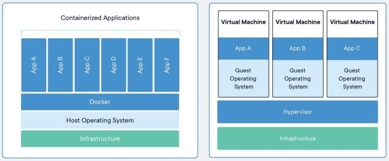
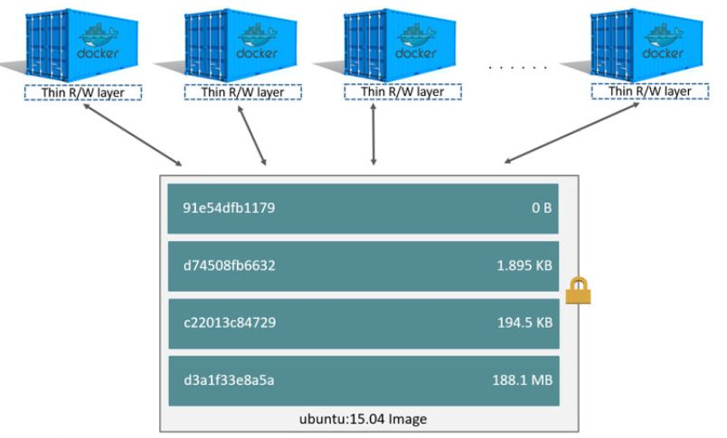

Docker is a container-based open-source virtual platform provided by Docker.Inc.
Docker technology uses the functions of kernel, such as Cgroups and Namespace, along with the Linux kernel, to separate the processes so that they can run independently, and to facilitate container creation and deployment, image transfer, and image version management processes as well as to execute containers.
This is one of the virtualization technologies, but compared to the existing virtual machine, it does not require a guest OS and is isolated in a processing unit, so that only the necessary amount of CPU and memory is used. Therefore, there is barely any loss due to virtualization.
• Comparison of Docker and Virtual Machine Structure

- Image: it does not change as it contains files and settings required for container execution
- Base image: Only the basic files or the Linux distribution are installed
- Docker image: After installing necessary programs, libraries, and sources for the base image, it is made into one file. In this document, an image refers to a Docker image created with one file after installing the Altibase database and necessary libraries on the base image
- Container: All values added or changed while the image is executed are stored in the container. In other words, when multiple containers are created with the same image, access to the lower image is shared, but each container has its own data.
• Relationship between image and container

Reference source: https://docs.docker.com/
{kind=link}
{kind=link}